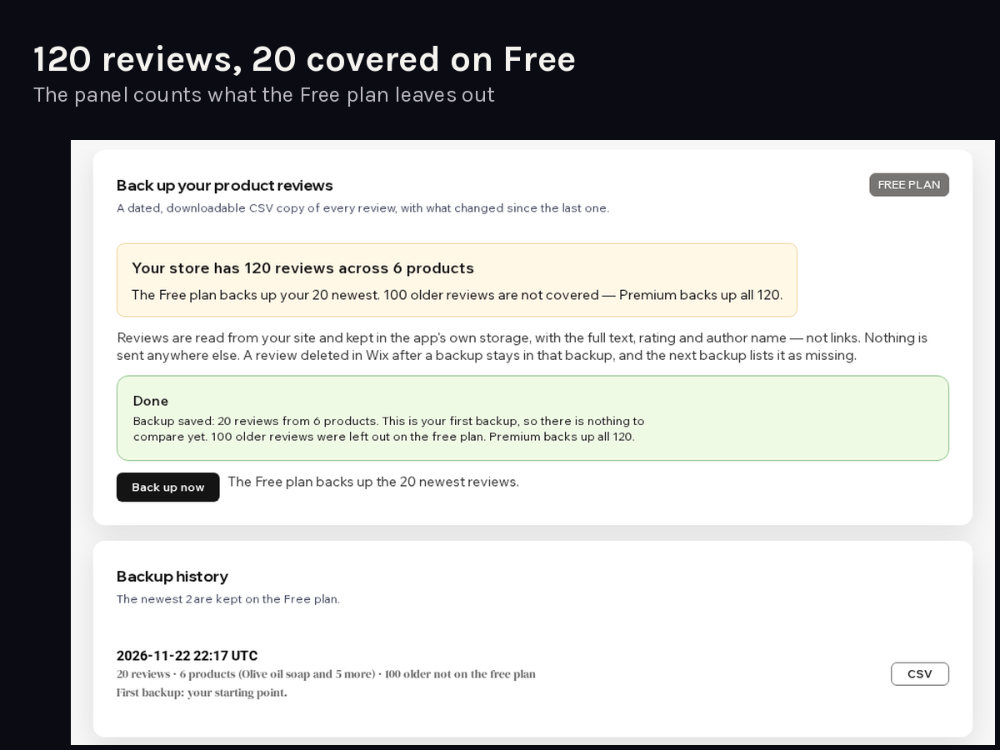

Reviews Backup: Review Export
Back up every product review as a CSV file
- Every review as a CSV file you keep
- Dated backups show what changed or vanished
- Restore reviews that disappeared from your store
- Free keeps the 20 newest; Premium keeps all

What it does
Product reviews are the proof a shop builds over years, and the store dashboard has no export button. A review deleted by mistake, hidden in a bulk edit or lost when a product was rebuilt does not come back.
This app reads every review through the store's own review service and keeps a dated copy. Press Back up now and you get a CSV file with one row per review: the product, the rating out of five, the full text, the author's name, the reply, the moderation status and the date. The file opens in Excel or Google Sheets, and the copy sits with the app, apart from the site.
Every backup is compared with the one before it: two new, one missing, three changed. Reviews that vanished since the previous backup are named one by one, so a hidden review is noticed before it costs a sale.
Premium keeps every review and every moderation status, adds a separate CSV for each product, restores reviews that disappeared from the newest backup (checked by review id, so no duplicates), keeps twelve months of history and takes a weekly automatic copy.
The free plan backs up the 20 newest reviews and keeps two backups. Premium is $5 a month, or $4 a month billed yearly, with a 14-day free trial.
Price
Free
Premium
$5/month, or $4/month billed yearly ($48/year), 14-day free trial
- Every review, every moderation status
- One CSV per product as well as the combined file
- Missing-review detection and restore